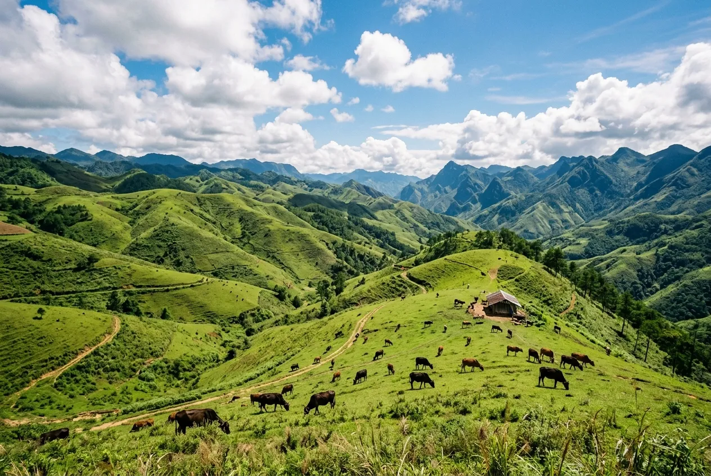
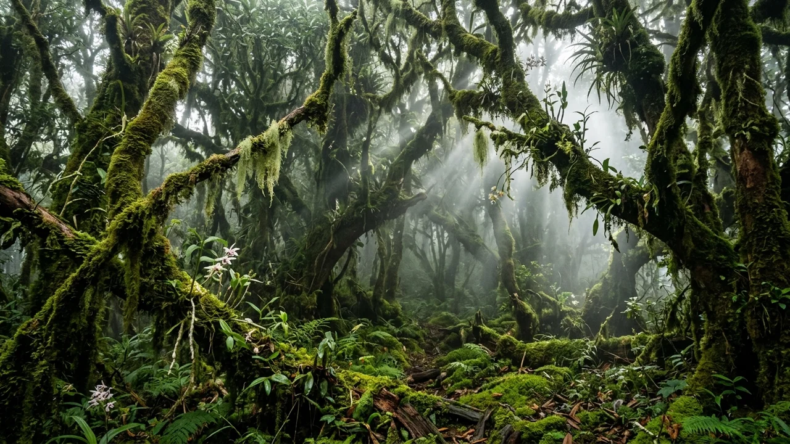
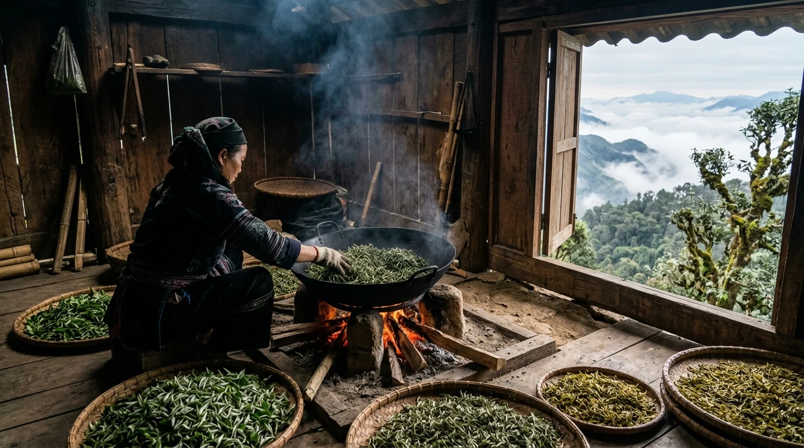
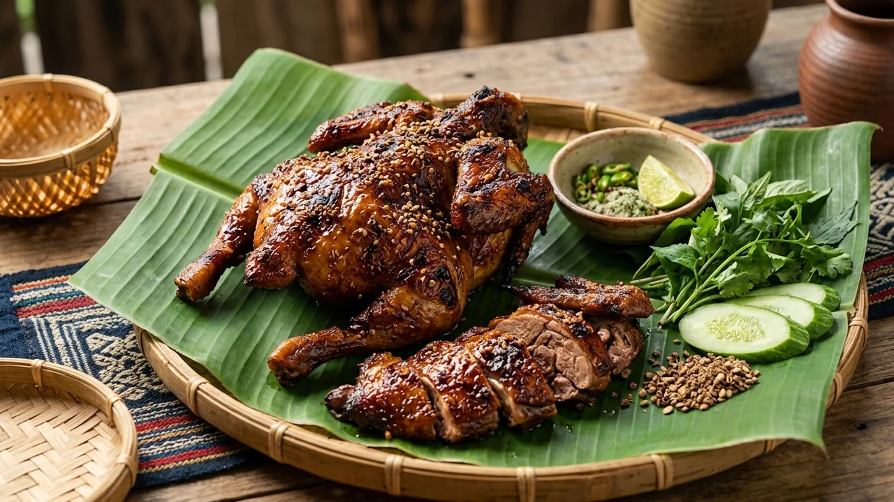
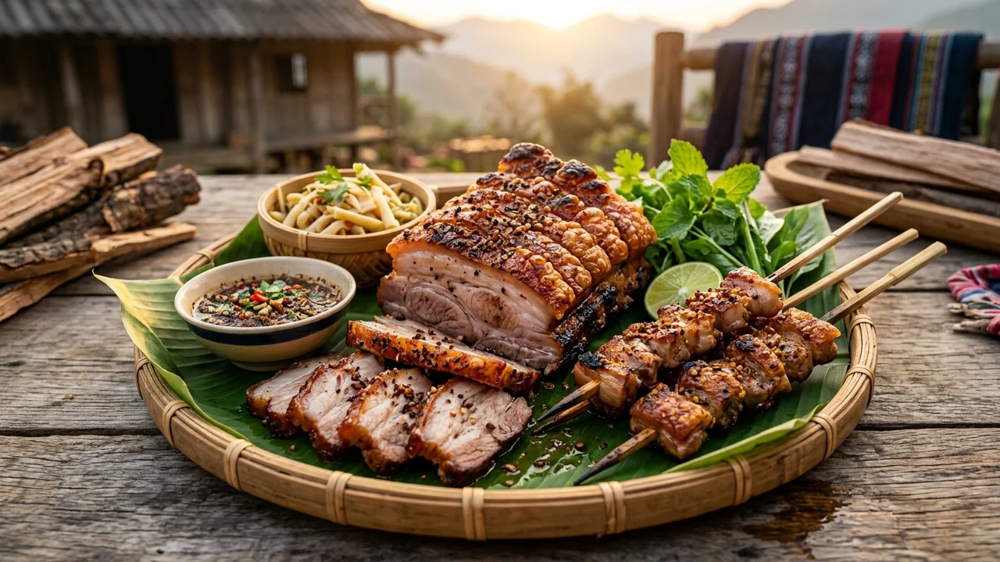
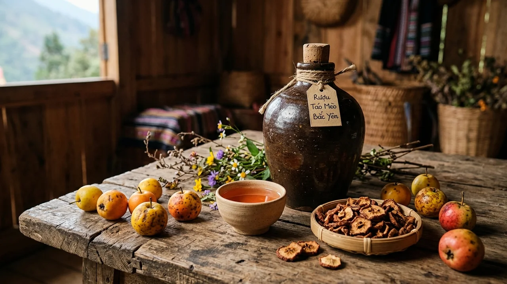
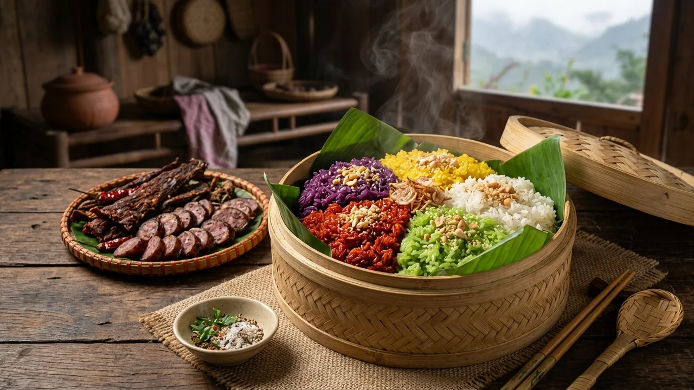
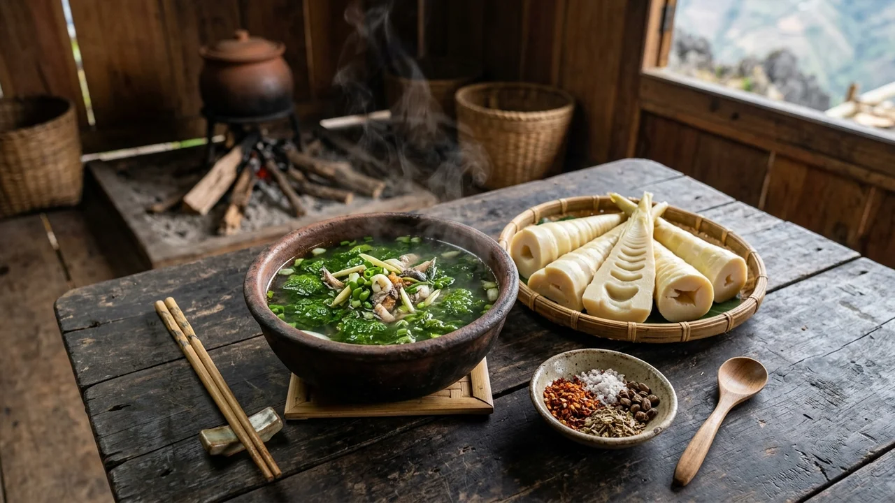

Tổng Quan: Thiên Đường Săn Mây Ngoạn Mục Nhất Việt Nam
Ẩn mình giữa trập trùng núi non hiểm trở của huyện Bắc Yên, tỉnh Sơn La, Tà Xùa là dãy núi cao sừng sững đóng vai trò ranh giới tự nhiên giữa hai tỉnh Sơn La và Yên Bái. Với đỉnh cao nhất đạt 2.865m, Tà Xùa xếp thứ 10 trong top những đỉnh núi cao nhất Việt Nam, được giới xê dịch trong và ngoài nước xưng tụng là "Thiên đường săn mây số một miền Bắc".
Nhờ địa hình lòng chảo độc đáo được bao bọc bởi các dãy núi cao chắn gió, thung lũng Tà Xùa sở hữu hiện tượng "sóng thần biển mây" dày đặc, bềnh bồng cuộn trào từ sáng sớm tinh mơ cho đến tận trưa nắng mà không hề tan biến. Nơi đây quyến rũ bước chân phượt thủ bởi những kỳ quan thiên tạo có một không hai: Sống lưng khủng long Háng Đồng cheo leo, Mỏm cá heo kỳ thú vươn mình ra vực thẳm, Cây cô đơn trầm mặc bên suối Sập và khu rừng nguyên sinh rêu phong cổ tích ma mị trên độ cao 2.600m.
☁️ Điểm Nhấn Săn Mây Tà Xùa
Xác suất săn mây thành công cực cao (trên 80% từ tháng 11 đến tháng 4 năm sau), biển mây dày đặc trắng xóa dâng lên sát mép đường đèo, hòa cùng không gian văn hóa bản địa mộc mạc của đồng bào H'Mông và những búp chè Shan Tuyết cổ thụ trăm năm.
Vị Trí Địa Lý & Dấu Ấn Lịch Sử Dãy Núi Ba Đỉnh
Dãy núi Tà Xùa gồm ba đỉnh núi lớn hợp thành một kỳ quan tự nhiên kỳ vĩ: đỉnh cao nhất 2.865m nơi dựng cột mốc trắc địa, đỉnh thứ hai lưu giữ dấu tích cột cờ thời kháng chiến, và đỉnh thứ ba tựa như đầu một con khủng long khổng lồ thời tiền sử. Vùng đất này thuộc xã Tà Xùa, huyện Bắc Yên, nằm cách thủ đô Hà Nội khoảng 240km và cách thị trấn Mộc Châu hơn 100km theo Quốc lộ 37 và Tỉnh lộ 112.
Trước đây, Tà Xùa là xã vùng cao đặc biệt khó khăn, quanh năm sương phủ mây mù cách trở giao thông. Tuy nhiên, bằng nỗ lực kiên cường mở đường vượt đèo của tỉnh Sơn La và sức sống bền bỉ của đồng bào H'Mông gìn giữ rừng chè Shan Tuyết cổ thụ, Tà Xùa đã vươn mình thành điểm sáng rực rỡ trên bản đồ du lịch sinh thái mạo hiểm Tây Bắc.
• Quyết định số 1676/QĐ-TTg ngày 25/12/2023 của Thủ tướng Chính phủ: Phê duyệt Quy hoạch tỉnh Sơn La thời kỳ 2021 - 2030, tầm nhìn đến 2050 xác định phát triển khu du lịch sinh thái, khám phá trải nghiệm Tà Xùa - Bắc Yên.
• Quyết định số 209/QĐ-TTg ngày 07/02/2017 của Thủ tướng Chính phủ: Phê duyệt Quy hoạch tổng thể phát triển Khu du lịch quốc gia Mộc Châu liên kết vùng du lịch văn hóa Bắc Yên - lòng hồ thủy điện sông Đà.
• Nghị quyết số 18-NQ/TU của Tỉnh ủy Sơn La: Về phát triển du lịch tỉnh Sơn La bền vững, bảo tồn văn hóa đồng bào dân tộc thiểu số và bảo vệ nghiêm ngặt hệ sinh thái rừng phòng hộ Tà Xùa.
• Quần thể Cây Di sản Việt Nam: Công nhận hàng trăm cây chè Shan Tuyết cổ thụ bản Bẹ, xã Tà Xùa có niên đại 200 - 300 năm tuổi.
• Cổng TTĐT tỉnh Sơn La:
sonla.gov.vn • Cổng TTĐT huyện Bắc Yên: bacyen.sonla.gov.vn.
Huyền Thoại & Truyền Tích Dân Gian Đồng Bào H'Mông
Gắn liền với cuộc sống mộc mạc bên triền núi đá, Tà Xùa ấp ủ những huyền tích thiêng liêng lưu truyền qua tiếng khèn Mông ngàn đời:
- Huyền tích Con Khủng Long Ngủ Vùi Giữa Biển Mây: Người già bản Háng Đồng kể rằng thuở xưa khi trời đất còn liền nhau, một con rồng đất (khủng long thần) khổng lồ đã giúp dân bản ngăn chặn lũ dữ từ thượng nguồn sông Đà. Sau trận chiến cam go bảo vệ mùa màng, linh thú kiệt sức nằm xuống giữa hai thung lũng sâu, hóa thân thành dãy núi đá nhấp nhô uốn lượn. Xương sống của rồng hóa thành con đường mòn nhỏ hẹp cheo leo — ngày nay được gọi là Sống lưng khủng long.
- Sự tích Cây Chè Bất Tử Shan Tuyết Bản Bẹ: Huyền thoại về một nàng sơn nữ H'Mông hiếu thảo đã vượt qua hiểm nguy leo lên đỉnh núi quanh năm băng giá tìm thuốc cứu mẹ. Cảm động trước tấm lòng thơm thảo, thần núi đã ban cho nàng những hạt mầm cây cổ thụ có búp phủ tuyết trắng tinh khôi. Khi uống nước lá chè đun sôi, mẹ nàng khỏi bệnh và dân bản trường thọ, sinh sôi nảy nở ấm no.
Chuỗi Hình Ảnh 4 Mùa Du Lịch Tà Xùa Tuyệt Mỹ
Khí hậu núi cao Tà Xùa quanh năm trong lành mát mẻ, với 4 mùa thay áo dệt nên những tuyệt tác thiên nhiên lay động tâm can. Dưới đây là bộ ảnh 4 mùa độc bản tái hiện trọn vẹn cảnh sắc đỉnh trời Tây Bắc:
Mùa Xuân: Sắc Trắng Tinh Khôi Hoa Sơn Tra & Hoa Mận
Khi hơi ấm mùa xuân xua bớt băng giá, khắp các sườn đồi Tà Xùa bừng sáng sắc trắng hoa táo mèo và hoa mận. Tiếng khèn Mông rộn rã đón Tết truyền thống bên hiên nhà gỗ.
Mùa Hạ: Mùa Nước Đổ Xím Vàng & Thiên Đường Trốn Nóng
Cao nguyên 1.800m mát rượi 20°C là điểm trốn nóng tuyệt hảo. Thung lũng ruộng bậc thang Xím Vàng bước vào mùa đổ ải lấp lánh như ngàn tấm gương phản chiếu mây trời.
Mùa Thu: Sóng Lúa Vàng Bậc Thang & Hương Táo Mèo Rừng
Các triền núi khoác lên màu áo vàng rực rỡ của mùa gặt lúa nương. Những cây táo mèo trĩu quả chín thơm phức, gió thu dịu mát đưa lữ khách vào cõi mộng mơ.
Mùa Đông: Sóng Thần Biển Mây Cuộn Trào & Hoàng Hôn Đỉnh Gió
Mùa cao điểm săn mây kỳ vĩ nhất năm: biển mây bồng bềnh đặc quánh như sóng thần tràn qua Sống lưng khủng long Háng Đồng, ánh hoàng hôn nhuộm đỏ rực Đỉnh Gió.
Top 10 Thắng Cảnh Biểu Tượng Nhất Định Phải Đến
Tà Xùa sở hữu hệ thống danh thắng kỳ vĩ và những góc check-in biểu tượng hàng đầu vùng cao Tây Bắc:
1. Sống Lưng Khủng Long Háng Đồng & Đại Dương Mây Trắng Kỳ Vĩ
Tọa độ săn mây huyền thoại bậc nhất Tây Bắc dài hơn 1,5km nằm chênh vênh giữa hai thung lũng sâu ngập tràn biển mây. Cảm giác đi bộ dọc sống núi mây cuồn cuộn tựa như sải bước trên lưng rồng khổng lồ bay giữa cõi thực và hư.
2. Mỏm Đá Cá Heo (Dolphin Rock)
Tạo tác kỳ diệu của tự nhiên với phiến đá bazan nhô hẳn ra ngoài mép vực thẳm như chiếc đầu cá heo đang ngoi lên khỏi biển mây bạt ngàn.
3. Cây Cô Đơn Tà Xùa (Suối Sập)
Cây táo mèo đứng kiên cường trên mỏm núi cao nhìn xuống vực suối Sập trong ráng chiều hoàng hôn, mang vẻ đẹp cô liêu thơ mộng đến nao lòng.
4. Đỉnh Gió & Hoàng Hôn Nhuộm Đỏ Biển Mây Ngàn
Tọa độ lý tưởng nhất để đón những cơn gió đại ngàn lồng lộng và chiêm ngưỡng khoảnh khắc hoàng hôn buông xuống. Biển mây chuyển sắc từ vàng cam rực rỡ sang tím thẫm kỳ ảo, ôm trọn các triền núi trập trùng.

5. Thảo Nguyên Tà Xùa Mênh Mông
Đồi cỏ thoai thoải xanh mướt trải dài tít tắp tựa khung cảnh thảo nguyên châu Âu, nơi lý tưởng để cắm trại qua đêm và đón bình minh tinh khôi.
6. Mỏm Đá Đầu Rùa Kỳ Vĩ
Tảng đá tự nhiên kỳ vĩ nhô hẳn ra ngoài vách núi hiểm trở mang hình dáng đầu một chú rùa cổ khổng lồ ngước nhìn trời xanh giữa biển mây.
7. Bản Làng Cổ Háng Đồng — Di Sản Văn Hóa & Kiến Trúc Nhà Gỗ Pơ Mu Cổ Kính
Bản làng nguyên sơ của đồng bào H'Mông nép mình bên sườn núi mây phủ, nổi bật với kiến trúc nhà gỗ pơ mu rêu phong, bờ rào đá tai mèo kỳ công và sắc hoa đào phai dịu dàng mùa xuân.
8. Ruộng Bậc Thang Xím Vàng
Kiệt tác canh tác dốc đứng bậc nhất Tây Bắc của đồng bào H'Mông, những nấc thang vàng óng uốn lượn ôm trọn sườn non vào mùa lúa chín tháng 9 - 10.

9. Rừng Nguyên Sinh Rêu Phong
Khu rừng nguyên sinh kỳ ảo ở độ cao 2.600m trên đỉnh Tà Xùa, nơi toàn bộ thân cây đại thụ được bao bọc bởi lớp rêu nhung xanh biếc ma mị như cổ tích.

10. Nghề Sao Chè Shan Tuyết Cổ Thụ Thủ Công Bản Bẹ — Tinh Hoa Danh Trà Vùng Cao
Nghề sao chè cổ truyền trên chảo gang bếp củi của người H'Mông bản Bẹ, nơi từng búp chè tuyết trắng ngậm sương đại ngàn được đánh hương tỉ mỉ thành thức trà vàng óng đượm hậu ngọt sâu.
Cẩm Nang Di Chuyển & Cung Đường Giao Thông
Cung đường từ Hà Nội lên Tà Xùa dài khoảng 240km, có thể di chuyển bằng xe khách hoặc xe máy/ô tô cá nhân:
- Tuyến đường bộ: Hà Nội → Quốc lộ 32 → Thị xã Sơn Tây → Cầu Trung Hà → Thanh Sơn (Phú Thọ) → Thu Cúc → Phù Yên → Bắc Yên (Sơn La). Từ thị trấn Bắc Yên vượt cung đường đèo dốc dài 14km theo Tỉnh lộ 112 để lên đến trung tâm xã Tà Xùa.
- Xe khách giường nằm / Limousine: Có các hãng xe chạy thẳng từ bến xe Mỹ Đình, Yên Nghĩa lên tận trung tâm xã Tà Xùa (nhà xe Nguyên Hằng, Khánh Thịnh, Tà Xùa Tour) với giá vé từ 250.000 - 350.000 VNĐ/vé/chiều.
- Thuê xe máy tại Tà Xùa: Rất thuận tiện tại các homestay với giá 150.000 - 200.000 VNĐ/ngày. Nếu đi Sống lưng khủng long Háng Đồng, bạn có thể thuê xe ôm người bản địa (giá khứ hồi khoảng 100.000 VNĐ) để đảm bảo an toàn tuyệt đối.
⚠️ Cảnh Báo An Toàn Đường Đèo Bắc Yên
Đoạn đèo 14km từ Bắc Yên lên Tà Xùa có độ dốc cao và nhiều khúc cua gấp; thường xuyên bị sương mù bao phủ tầm nhìn dưới 5m vào sáng sớm và chiều tối. Luôn bật đèn vàng phá sương, đi chậm về số thấp và tuyệt đối không vượt ẩu ở các khúc cua khuất tầm nhìn.
Tinh Hoa Ẩm Thực Tà Xùa — Đậm Đà Phong Vị Núi Rừng Tây Bắc
Ẩm thực Tà Xùa mộc mạc, thuần khiết từ sản vật tự nhiên được chế biến cùng các loại gia vị hoang dã nức tiếng Tây Bắc:
1. Trà Shan Tuyết Cổ Thụ Tà Xùa
Đệ nhất danh trà Tây Bắc được thu hái từ những cây chè cổ thụ trên 200 năm tuổi. Nước trà sánh vàng mật ong, tiền chát dịu nhẹ và hậu ngọt sâu lắng kéo dài, tỏa hương thơm ngát của sương núi đại ngàn.

2. Gà Đen H'Mông Nướng Mật Ong Hạt Dổi
Giống gà đen bản địa quý hiếm của người H'Mông thịt săn chắc, thơm ngọt từ xương. Gà nướng nguyên con trên than hồng phết mật ong rừng óng ả, chấm muối ớt hạt dổi mắc khén cay nồng tê tái.

3. Thịt Lợn Bản Cắp Nách Nướng Mắc Khén
Lợn đen bản địa thả rông trên triền núi thịt thơm chắc, lớp bì dày giòn tan. Từng xiên thịt nướng xèo xèo trên than củi tỏa mùi thơm đặc trưng của hạt mắc khén và lá rừng hoang dại.

4. Rượu Táo Mèo Rừng Bắc Yên (Sơn Tra)
Được ngâm ủ từ quả táo mèo rừng tươi mọc tự nhiên trên các đỉnh núi cao Bắc Yên. Rượu màu nâu đỏ hổ phách sánh mịn, hương thơm nồng, vị ngọt chát êm dịu làm ấm lòng lữ khách trong đêm lạnh.

5. Xôi Nếp Nương Ngũ Sắc Tây Bắc
Hạt nếp nương dẻo quánh đồ trong chõ gỗ thơm phức, nhuộm 5 màu tự nhiên từ lá rừng tượng trưng cho ngũ hành. Ăn kèm muối vừng rừng bùi béo hay vài lát lạp xưởng hun khói gác bếp.

6. Canh Rêu Đá Suối Sập & Măng Trúc Luộc
Sản vật hiếm hoi từ dòng suối Sập trong vắt: rêu đá non được vò sạch nấu canh thanh ngọt mát lành; kèm đĩa măng trúc đắng luộc giòn sần sật chấm chẳm chéo cay nồng đặc trưng Tây Bắc.
Bảng Giá Vé Tham Quan & Dịch Vụ Niêm Yết
Các điểm tham quan thiên nhiên tại Tà Xùa hầu hết mở cửa tự do, chi phí chủ yếu đến từ phương tiện hỗ trợ và trải nghiệm bản địa:
| Điểm Đến / Loại Dịch Vụ | Mức Giá Tham Khảo | Ghi Chú & Khuyến Nghị |
|---|---|---|
| Sống Lưng Khủng Long Háng Đồng | MIỄN PHÍ VÀO CỬA | Xe ôm bản địa chở từ bãi xe vào sống lưng: 50.000 VNĐ/lượt (100.000 VNĐ khứ hồi). |
| Mỏm Cá Heo & Cây Cô Đơn | MIỄN PHÍ VÀO CỬA | Tự do chụp ảnh, giữ gìn vệ sinh và không leo trèo lên cành cây cô đơn. |
| Đỉnh Gió & Thảo Nguyên Tà Xùa | MIỄN PHÍ VÀO CỬA | Phí dọn vệ sinh khi cắm trại qua đêm: 20.000 - 30.000 VNĐ/người. |
| Trekking Rừng Rêu Đỉnh Tà Xùa | 600.000 - 900.000 VNĐ/ngày | Thuê porter dẫn đường bản địa kiêm mang vác hành lý và nấu nướng trên núi. |
| Thuê xe máy tại trung tâm xã | 150.000 - 200.000 VNĐ/ngày | Nên chọn xe số (Wave/Sirius) máy khỏe để vượt dốc an toàn. |
| Giá phòng Homestay ngắm mây | 350.000 - 1.200.000 VNĐ/đêm | Đa dạng từ giường dorm cộng đồng đến bungalow kính view trọn biển mây. |
⚖️ Quy Tắc Du Lịch Có Trách Nhiệm Vùng Cao
Thực hiện nghiêm túc hướng dẫn của UBND huyện Bắc Yên: Bảo vệ tuyệt đối rừng nguyên sinh rêu phong và quần thể Cây Di sản chè Shan Tuyết; không khắc vẽ bậy lên vách đá; mang toàn bộ rác thải nhựa về điểm tập kết trung tâm.
Gợi Ý Lịch Trình 2N1Đ Săn Mây & Mẹo Bản Địa An Toàn
Lịch trình tối ưu hóa cơ hội săn biển mây ngoạn mục và khám phá trọn vẹn nét đẹp văn hóa Tà Xùa:
📅 Ngày 1: Hà Nội — Bắc Yên — Cây Cô Đơn — Mỏm Cá Heo — Hoàng Hôn Đỉnh Gió
• Sáng: Khởi hành từ Hà Nội theo Quốc lộ 32, dừng chân ăn trưa thịt chua Thanh Sơn (Phú Thọ) hoặc thị trấn Bắc Yên.
• Chiều: Lên tới Tà Xùa nhận phòng homestay ngắm mây, sau đó vi vu xe máy check-in Cây Cô Đơn và Mỏm Cá Heo.
• Tối: Lên Đỉnh Gió đón hoàng hôn rực rỡ, thưởng thức nồi lẩu gà đen H'Mông nghi ngút khói và nhâm nhi chén rượu táo mèo cay ấm.
📅 Ngày 2: Săn Sóng Thần Biển Mây Háng Đồng — Chè Cổ Thụ Bản Bẹ — Hà Nội
• 5h00 Sáng: Xuất phát đi Sống lưng khủng long Háng Đồng, đón bình minh rọi sáng biển mây cuồn cuộn như sóng thần đại ngàn.
• Sáng: Ghé bản Bẹ chiêm ngưỡng quần thể Cây Di sản chè Shan Tuyết cổ thụ, thưởng thức ấm trà Shan Tuyết nóng hổi.
• Trưa: Trả phòng homestay, xuôi đèo Bắc Yên thưởng thức bữa cơm trưa gà đồi măng trúc.
• Chiều: Khởi hành về lại Hà Nội, kết thúc chuyến săn mây thành công và ngập tràn cảm xúc.
💡 Mẹo Săn Mây Bách Phát Bách Trúng Của Dân Bản Địa
- Công thức săn mây: Hãy theo dõi dự báo thời tiết: ngày hôm trước có mưa phùn nhẹ hoặc độ ẩm trên 85%, sáng hôm sau trời hửng nắng, gió lặng dưới cấp 2 → 99% sẽ xuất hiện biển mây đặc quánh.
- Trang phục giữ ấm: Sáng sớm nhiệt độ trên Sống lưng khủng long có thể xuống dưới 10°C kèm sương muối, bắt buộc mang áo gió chống nước, khăn ấm, găng tay và giày bám chống trơn trượt.
- Bình tĩnh khi mất mây: Nếu trung tâm Tà Xùa bị mây mù bao phủ (mù mịt), hãy di chuyển ngay sang phía Sống lưng khủng long hoặc đường đi Xím Vàng vì các thung lũng bên kia thường có nắng và biển mây cực đẹp.